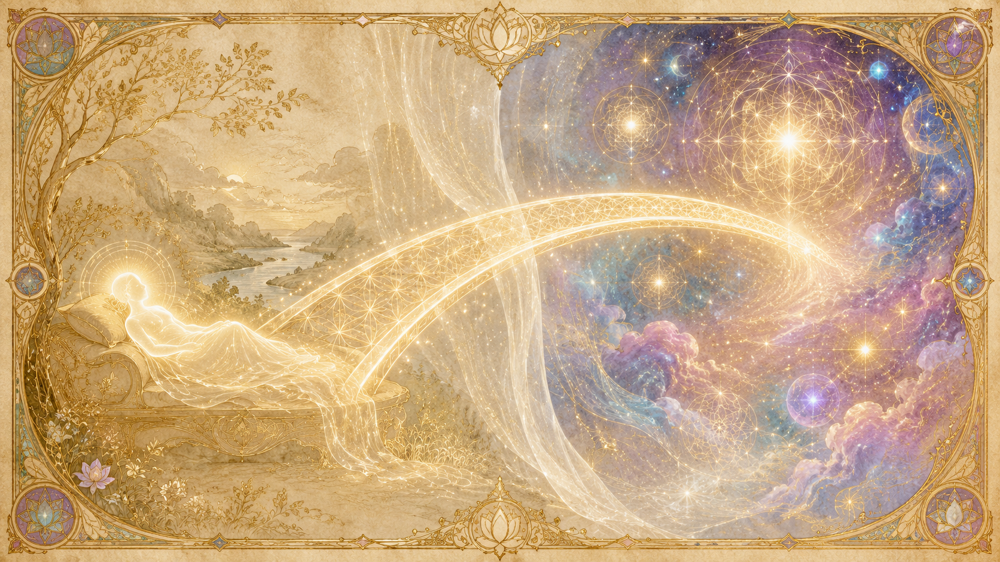

時空 vs 時間/空間:可見的與不可見的
「用你們的話說,差別就是可見與不可見之間、物質與形而上之間的差別。」
提問者請 Ra 把「時空」(space/time)與「時間/空間」(time/space)的差別講清楚。Ra 的回答短得驚人,卻是整章的鑰匙——用我們的語言,差別就是「可見與不可見之間、物質與形而上之間」的差別;若用物理學家拉森(Dewey Larson)的數學語言,差別就是 s/t 與 t/s 之別。前者是分子、分母對調的另一面:時空裡「空間」隨「時間」展開成我們看得見、摸得到的物質宇宙;時間/空間則是它翻過來的那一半,看不見、形而上,卻同樣真實。
Ra 在另一場把這組概念說得更完整。祂說這兩者是「盡可能用數學方式去描述你們幻象的種種關係——所見之物與所未見之物之間的關係」。換句話說,時空與時間/空間不是兩個地方,而是同一個幻象的兩種描述方式:一個面向「看得見的」,一個面向「看不見的」。
Ra 也提醒:在合一的神祕追尋裡,其實「永遠不需要去考慮這兩者,因為它們不過是一套幻象系統的一部分」。它們是機械性的概念,不是靈性演化的核心——這點 Ra 在被問「研究這個值不值得」時也直說過,比起研究這套機制,研究「愛」更貼近重點。但要理解死亡、回顧、轉世與夢,就不能不先認得這「另一面」。
它只在第三密度這麼絕對
這組區分有其作用範圍。Ra 說:「如你們所理解的時空與時間/空間之區分,除了在第三密度之外並不成立。」不過祂補充,第四、第五密度、以及某種程度上的第六密度,「仍在某種被極化的時空與時間/空間系統中運作」——也就是說越往上走,這道牆越薄,到最高密度才真正消融。也因此這套概念對「我們」特別重要:第三密度正是它最堅硬、最像兩個分開世界的地方。
硬幣的兩面:投胎與死亡是在兩面之間切換
時間/空間「正是和你的時空一樣多的你」
Ra 反覆強調:時間/空間並不是某個遙遠的彼岸,而是「正是和你的時空一樣多的你自己」。你不是只活在物質這一面,而是同時存在於兩面。祂用一個生動的比喻說明這另一面的時間結構:在時間/空間裡,「所有的時間都是同時的,就像在你們的地理上,你們的城市與村莊全都同時在運轉、熙來攘往、住滿了各自忙著事情的存有一樣。在時間/空間裡,自我也是如此。」
所以這不是兩個世界,而是一枚硬幣的正反面:你現在這一面(時空)是線性流動、看得見的;翻過去那一面(時間/空間)是全景同時、看不見的。兩面拼起來,才是完整的你。Ra 也說明,時間/空間「並不比時空更同質」——它「是一套和時空一樣複雜而完整的幻象、舞蹈與模式系統,並擁有同樣有結構的、你們可稱為自然律的東西」。它不是混沌的靈界,而是一個有自己法則的真實領域。
投胎:從時間/空間進入時空
那麼出生與死亡是什麼?就是在硬幣兩面之間翻轉。提問者直接問:投胎的過程是不是從時間/空間移動到時空?Ra 簡潔確認:「投胎過程涉及從時間/空間被投生到時空。這是正確的。」也就是說,一個存有在時間/空間裡完成了規劃與準備,然後「掉進」物質這一面,披上肉身,開始一次線性的人生。
死亡:翻回不可見的那一面
死亡則是反方向的翻轉——肉身脫落,意識回到時間/空間。Ra 描述,當一個存有走過第三密度的死亡過程、發現自己身處時間/空間,它「會發現自己處在一組不同的處境中」。值得注意的是,Ra 說死後的存有「遠比生前更有覺察力,沒有那種全心去愛者常有的易受蒙蔽」——翻到不可見那一面後,視野反而更清晰。
至於死法,Ra 說後續條件其實相同,只是過渡的平順度有別:自然死亡無疑最和諧;被謀殺而死的存有較混亂,「需要一些時間/空間來重新站穩腳跟」;自殺而死則「造成大量療癒工作的必要」。但無論哪一種,翻過去的都是同一面實相。
幕(遮蔽)只遮住這一面
Ra 還點出一個關鍵:「遮蔽」(那道讓我們在第三密度遺忘的幕)只作用在時空這一面。祂說,時間/空間的種種條件在立幕之前、之後都一直存在;改變的是時空裡的現象,以及夢境與高我接觸的「質地」。換句話說,硬幣的不可見那一面,並沒有被那道幕蓋住——所以死後、夢中、深度冥想時,我們才得以瞥見它。
在時間/空間裡:空間固定,時間可移動
「時間/空間的本質是這樣的:一生可以被當作一本書或一份記錄,整體地觀看;書頁被研讀、被翻動、被反覆閱讀。」
時間與空間的不對等
時空與時間/空間最核心的差別,Ra 用一個詞概括:「不對等」。在時空裡,空間的定位給了我們可觸摸的結構,時間則像一條只能向前的河;翻到時間/空間,主從關係倒過來——「時間」成了主導的性質,使「存有與經驗在相對意義上變得不可觸摸」。在那一面,空間相對固定,而時間反而可以移動、翻閱、來回。
這正是為什麼形而上層面會被用上「大量的時間」,去「回顧再回顧前一次時空投生的種種偏向與學習/教導」。在時空裡你只能往前活;在時間/空間裡,你卻能像翻書一樣前後翻看自己的一生。
一生像一本可翻閱的書
Ra 給的比喻極為清晰:時間/空間的本質,使「一生可以被當作一本書或一份記錄整體地觀看,書頁被研讀、被翻動、被反覆閱讀」。在物質這一面,人生是一頁一頁、不可逆地翻過去的;翻到另一面,整本書攤在眼前,任何一頁都能重讀,整個情節能一眼看盡。這就是「全景」的優勢——也是死後回顧之所以可能的結構基礎。
死後:療癒、回顧(測驗)、與轉世之間的規劃
引導下的療癒與回顧
死後在時間/空間裡的歷程,不是漫無目的的飄盪,而是一套有協助者引導的程序。Ra 描述,存有在助手協助下會經歷一個明確的過程:完整地看見自己的種種經驗、把它們放在整個一生的脈絡裡對照、為自己錯過的路標寬恕自己、再評估未來還需要學習什麼。這個歷程「最初是透過高我」進行的,「直到存有在時空中變得有意識地知曉靈性演化的過程與方法」為止。
回顧為何是「測驗」,而不只是「研讀」
提問者問了一個好問題:如果本來沒有那道幕,死後再回顧一生有什麼用,存有不是早就該知道發生了什麼嗎?Ra 的回答點出時間/空間回顧的真正功能。祂說,在投生期間,「材料是被打散的,而且過度的注意力幾乎不可避免地會被放在細節上」。投生之後的測驗,「並不是那種牽涉到正確背誦許多細節的測驗。這測驗反而是自我對自我的觀察,常常如我們所說有協助;在這觀察中,人看見一切細節研讀的總和——那就是一種態度,或一組態度,它使心/身/靈複合體的意識產生偏向。」
換句話說:活著的時候,你被細節淹沒,看不清自己;死後翻到時間/空間,整本書攤開,你才看見這一生「最後沉澱成什麼態度」。研讀發生在投生中(焦點被打散),測驗發生在投生後(整合的理解浮現)。回顧之所以有用,正因為它在另一面、用全景的視角,讓你看見自己真正變成了什麼樣的人。
正向與負向的回顧:差別在哪
提問者追問:正向與負向的療癒回顧是否相同?Ra 區分了兩面的分工。在時空(物質這一面),你可以實際「修正」當下的不平衡;在時間/空間,你無法修正已經做過的行為,而是去「感知」那些不平衡並寬恕,然後為它們「設定在未來時空經驗中修正這些不平衡的可能性/或然率」。Ra 總結這組互補:「時間/空間的優勢,是那宏大全景的流動性;時空的優勢,是……人可以修正不平衡。」一面負責看清、規劃,另一面負責動手修。至於負向極化的存有,Ra 確認其療癒與回顧的過程是「相似」的——機制不分極性,差別在你拿它做什麼。
轉世之間的規劃:在另一面寫好催化劑
看清楚之後,下一步就是規劃下一生。Ra 說明,存有「在投生之前」就選好了「催化劑有很高機率被取得」的種種手段。它會在投生前與父母、手足及其他存有立下協議,這些協議「提供了、也將提供工作與情誼的經驗催化劑的機會」。而背後運作的,正是時間/空間與時空裡的「可能性/或然率漩渦」——它們被社會文化、生活水準、法律關係框架、投生時的社會氛圍等共同塑形。Ra 特別強調,這些功課「與其他自我有關,而不是與事件有關;與給予有關,而不是與接受有關」。規劃在不可見的那一面完成,然後存有再翻回時空,把它活出來。
光體與「時間/空間身體」:療癒真正發生的地方
療癒先發生在時間/空間身體
Ra 對「療癒」的說明,把時間/空間與身體的關係講得很具體。祂說:「療癒是在心/身/靈複合體的時間/空間部分完成的,被造形的、或稱以太的身體所採納,然後才交給時空的物質幻象。」也就是說,真正的療癒不是先發生在你看得見的肉體上,而是先發生在那個看不見的「時間/空間身體」(以太體、靛藍光身體)裡。
Ra 更直接點出關鍵:「是以太體在時間/空間裡採納了你們稱為『健康』的那個配置,才是你們所謂健康的鑰匙——而不是任何發生在時空裡的事件。」而推動這個轉變的是意志:「是存有的意志、尋求、渴望,使靛藍身體去採用那個新的配置,並重塑身體。」這說明了為什麼信心與意願能影響療癒——它們作用在硬幣的另一面,再顯化回這一面。
螺旋之光同時照亮兩面身體
另一種能量的運作,則同時觸及兩面。Ra 在談金字塔的螺旋光能時說,這股能量「在物質複合體的場域中移動,照亮時空身體的每一個細胞;在這麼做的同時,也照亮那與時空黃光身體緊密對齊的時間/空間對應體」。祂特別說明這「不是以太體或自由意志的功能,而是一種輻射,很像你們太陽的光線」。換句話說,人不只有一個肉身,還有一個與它「緊密對齊」的時間/空間對應體;某些能量會把兩者一起點亮。
這也呼應了 Ra 在別處說的:靛藍光(indigo ray)正是這道門戶——它牽涉到超越時空的平衡,進入時空與時間/空間相結合的領域。光體、時間/空間身體、靛藍門戶,講的都是同一件事:你在不可見那一面,有一個同樣真實、且更根本的身體。
夢:每晚通往時間/空間的橋

夢是跨越幕的溝通
夢是我們在活著時最常觸及「另一面」的方式。Ra 把夢定義為「一種跨越潛意識心智與意識心智之間那道幕的溝通活動」,而它的價值,完全取決於個人各能量中心的阻塞與啟動狀態。對能量中心尚未打開的人,夢主要在處理日常的心理消化;對心輪已啟動的人,夢則「呈現出另一種活動」。
預知:因為在時間/空間裡沒有過去未來
對心輪能量已啟動者,夢可以「鬆散地稱為預知,或一種先於物質顯化即將發生之事的知曉」。Ra 解釋這種能力為何可能:因為「心/身/靈複合體在時間/空間裡體驗它自己,以致於現在、未來、過去這些詞失去了意義」。這正好接回前面「一生像一本可翻閱的書」——當你在夢中翻到時間/空間那一面,線性時間瓦解,還沒在物質裡發生的事,在那裡早已「同時」存在,於是被讀到了。
夢與療癒共用同一座橋
Ra 還指出,夢的歷程「使用了從形而上到物質的橋樑」,而同一座橋「也把心、身、靈的每一種扭曲——如它接收了能量湧入的扭曲那樣——傳導過去,使療癒得以發生」。祂並澄清一個常見誤解:療癒並不是隨快速動眼期(REM)而發生,而是「大部分發生在心/身/靈複合體的時空部分,利用通往時間/空間的橋來讓療癒得以進行」。夢、療癒、預知,共用的都是這座連接硬幣兩面的橋。
智能無限、形而上實相,與這組概念的關連
時間/空間就是「內在層面」
Ra 在被問起時直接定調:就「可運作的理解」而言,時間/空間就是所謂的「內在層面」(inner planes)。我們講形而上、講靈界、講內在世界,在 Ra 的精準語言裡,指的多半就是這枚硬幣看不見的那一面。它不是比喻,而是有結構、有自然律的真實領域——只是用「時間為主、空間為輔」的方式運作。
時空與時間/空間都是「創造」展開後的產物
把鏡頭拉到最大,這兩面都不是最初的源頭。Ra 描述,時空本身是在創造之後才出現的:智能能量的種種漩渦「在你們所謂的第一密度裡,花了大量時間處於一種無時間的狀態」;而「時空的經驗或存在,是在『造物之神』(Logos)的個體化過程之後才出現的」。在那個個體化發生之前,還沒有我們所知的時空。Ra 並區分:「那唯一未分化的智能無限,未極化、圓滿而完整,是那神祕籠罩之存有的宏觀宇宙」;智能能量則是被「愛的聚焦」加諸於原初材料(光)之上的種種配置——是有形環境的「動態形貌」。時空與時間/空間,都是智能無限經由愛聚焦成光、再展開後的兩個面向。
越往上,兩面越趨於合一
那麼極性(兩條道路)與這組概念有什麼關係?Ra 說,正是「透過自願的極化行動」,做功才被遠更有效率、且帶著更大純度、強度與多樣性地完成;而這份深化是發生在時間/空間裡的。換句話說,你在時空裡做的選擇,其重量被記在不可見的那一面。隨著密度提升,時空與時間/空間的牆逐漸變薄;到了高密度,「如你們所理解的」這組區分不再成立,一切終將被看成 愛/光 與 光/愛——硬幣的兩面,重新合回那唯一的智能無限。